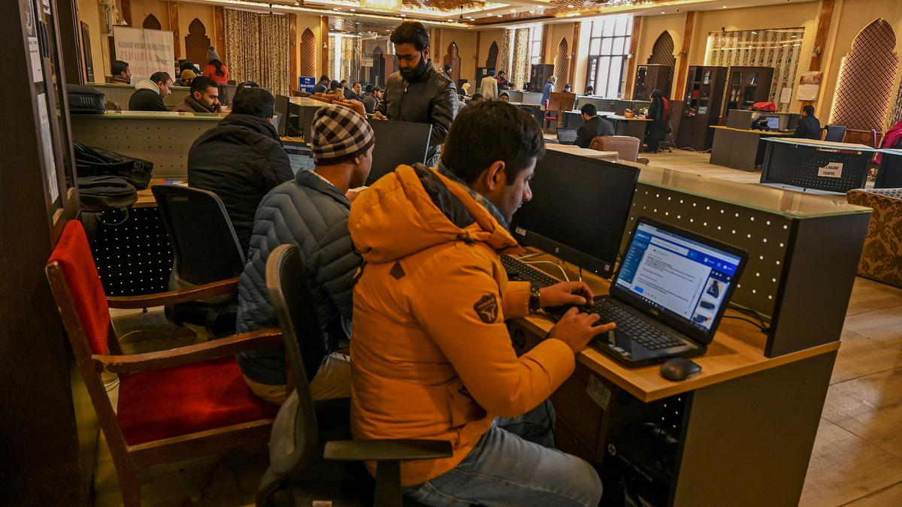

I N D I A ' S N A T I O N A L N E W S P A P E R S I N C E 1 8 7 8
Supreme Court directs publication of final orders of panel reviewing ‘proportionality’ of Internet suspensions in J&K
The court did not delve on whether the reasons or findings of the review committee need to be published. The Bench said it was for an individual petitioner to raise the plea in the appropriate forum or court that non-existence of reasons, if any, in a final review order affected their right to challenge.
“We are not going into that aspect,” Justice Gavai remarked.
Delhi approaches Moscow for early discharge of Indian ‘army helpers’
The Hindu had reported that about 100 Indians have been hired by the Russian Army over the past year, and at least three are at the Ukraine border; MEA urged Indians to stay away from the conflict
India has approached the Russian authorities for “early discharge” of Indians working as support staff with the Russian Army, the Ministry of External Affairs (MEA) said on Friday, urging Indian nationals to stay away from the ongoing Russia-Ukraine conflict. The comments by MEA spokesperson Randhir Jaiswal came after a February 20 report by The Hindu that at least three Indians who were hired as security helpers by Russia were forced to fight alongside the country’s forces along its border with Ukraine. The Hindu subsequently reported that there are around 100 Indians who are said to have been hired by the Russian Army over the past year.
IIT Madras invites public to visit its state-of-the-art labs to engage and explore science
The collaboration aims to launch a series of professional career courses
that are
transformative and also cater to the needs of the job market today.
IITK Foundation for Advanced Consulting, Education and Training (IFACET), established by
IITK, joined forces with GUVI, an HCL Group EdTech company to launch
technology and business
courses in regional languages
According to a press release by IITK, the collaboration aims to launch a series of
professional career courses that are transformative and also cater to the needs of the job
market today. The courses are offered in English, Hindi and Tamil.
“IIT Kanpur has been offering various certificate programs to help students to be
well-equipped for success in the ever-evolving professional landscape. GUVI has a unique
positioning among Ed-tech players with their expertise in reaching out to students in
vernacular medium. Through this partnership we look forward to unlocking new possibilities
by reaching out to student diaspora across India whose medium of instruction has been in
their local language," said Prof S Ganesh, Director, IIT Kanpur.
“We are excited about the collaboration with IIT Kanpur, showcasing our commitment to
deliver high-quality education at a national level. Our meticulously crafted programs aim to
seamlessly connect academic knowledge with industry requirements, empowering individuals to
excel in today’s competitive job market," said Arun Prakash M, Founder & CEO of GUVI.
According to IIT Madras, as part of the ‘Anaivarukkum IITM’ (IITM
for all)
initiatives, this annual expo is being held at the campus on the 2nd and 3rd March
2024,
where the public can also visit the labs at the institute.
IIT Madras’ Centre For Innovation (CFI) will also be organizing the CFI Open House
2024 on
March 3, 2024, which is also open to the public.
All those who are interested in attending the ‘IITM for All’ expo are requested to
register
before February 29, 2024, as it is mandatory for entering the campus.
“This is one such initiative of the students, which institute is fully supporting to
showcase IIT Madras’ advanced laboratories to the general public. I believe this
will be an
opportunity for all to visit the beautiful campus and motive the young
generation who will be the leaders in the future," said Prof Sathyanarayana N Gummadi, Dean (Students), IIT Madras. All those who are interested in attending the ‘IITM for All’ expo are requested to register before February 29, 2024, as it is mandatory for entering the campus.
IIT-Madras startup GUVI to train one lakh engineering students in TN through hackathons
CHENNAI: IIT-Madras and IIM Ahmedabad incubated company GUVI has launched "Naan Mudhalvan - Tamil Nadu Coders Premier League"to train one lakh engineering students in the state through hackathons.
The league is a series of online and offline hackathons which will provide a platform for ambitious engineering students of Tamil Nadu to exhibit their coding skills while gaining valuable upskilling opportunities, completely free of cost.
GUVI gives career aspirants of IT and software jobs through self-paced learning tech courses, ZEN class career programs, and other vernacular EdTech services. IT has created an online platform for students to learn in their mother tongues and offers specialised IT courses to upskill and make them ‘job ready.’ The league not only offers a competitive environment for coders but also provides numerous opportunities,
including cash prizes worth Rs 2 lakh and internships for the top-performing teams. Moreover, it is designed to focus on trending technological themes like artificial intelligence, data science, and full stack development. The programme shortlists top-performing teams, giving them a platform to showcase their talents in technology and programming. The league also has top companies as partners providing students a valuable exposure to potential employers in the tech industry.
What Can You Do with Full Stack Web Development?
Full stack web development is a beneficial skill to have because it teaches you every element of the technical side of running a webpage or application. You will learn to use languages like HTML/CSS and JavaScript to create stunning, visually evocative web pages. You’ll learn back end languages or frameworks, like Python or the MERN stack, to build the server-side infrastructure that allows webpages to function. Thus, learning full stack web development will teach you how to find work building any aspect of a web application or system. It will set you up for future success in fields adjacent to these programming languages, like data science, cybersecurity, or machine learning. With Full Stack Web Developers being in high demand, learning these skills is a great way to break into a high-paying, diverse career field.

For students not looking to pivot to a new career, learning full stack web development is an ideal way to begin building your own web presence. Whether you are starting an advocacy organization, building a small business, launching a new product idea, hoping to create vibrant personal projects, or just starting a freelancing career, learning full stack web development will let you take care of every aspect of the web development process. The internet offers various creative and professional opportunities for you to take advantage of. Learning how to handle every step of the development process is an ideal way to ensure that the digital presence you are building works the way you want it to work.